Abeans Visual Composition with Eclipse VE Tutorial |
|---|
| Project: | Abeans VE Plug-in |
|---|---|
| Status: | Draft |
| Availability: | :/Abeans VE Plug-in//TUT-Abeans_Visual_Composition_with_Eclipse_VEP.xml |
| Creation: | 2005-03-02 (Jernej Kamenik) |
| Last Modification: | 2005-09-01 (Jernej Kamenik) |
| Copyright © 2005 by Cosylab d.o.o. All Rights Reserved. | |
Scope
This is a tutorial that shows how to visually assemble BACI model based Abeans applications in the Eclipse Visual Editor with only a few mouse clicks. The application (Power Supply Panel) allows a user to control one power supply device at a time by means of Abeans components. It is intended for users who are not familiar with the Java programming language and for the ones who want to build applications visually.
Audience
The audience of this document are all users of Abeans application framework.
Table of Contents
1. Introduction
2. The Abeans BACI Application template
3. Creating the GUI
3.1. Application layout
3.2. Adding GUI Components
4. The Power Supply Bean
5. Adding application logic
5.1. Connecting Power Supply Bean to GUI Components
5.2. Handling events
6. Creating the application for a specific device
7. Running the application from within the IDE
8. Conclusion
9. Appendix
9.1. Abeans Visual Eclipse Plugin Installation
9.2. Configuring Eclipse Projects for Building and Running ACS Abeans Visual Applications
References
Document History
How to Read This Document
This document's meta-information (authors, revision history, table of contents, ...) can be found above. What follows below is the body of the document. The body is composed of several sections, which may be further composed of subsections.
Typographical styles are used to denote entities of different kinds. For a full list of entities and their respective typographic conventions, please refer to the Styles section of the XML Documentation document.
When viewing the document in a non-printed form, it is possible to submit comments regarding a given section to the document's owner. This is achieved by clicking the mail icon next to the section title. For this to work, your mail must be configured to properly handle the mailto URLs.
1. Introduction
This document provides a step-by-step procedure on how to create a simple ACS based Abeans application in the Eclipse Visual Editor just by dragging a few componnents on the canvas and connecting them via menu selections. The showcase application Power Supply Panel (PSPanel) allows a user to control one power supply device at a time by means of Abeans components. See the ACS Eclipse installation document on how to install and configure Eclipse for ACS java development, as well as the Appendix (9.) on how to compile and run ACS based Abeans applications with Eclipse Visual Editor. The application discussed in this document is com.cosylab.demo.PSPanel, its source code can be found in the acsabeans/src module.
2. The Abeans BACI Application template
The procedure for creating visual Abeans applications involves using the prepared Abeans Application templates installed with the Abeans VE plug-in in Eclipse IDE. This section outlines the steps needed to start visually composing an ACS based Abeans visual application.
- In the system menu bar on top of the IDE select and and then from the drop-down menu select the option.
-
A wizard pops up.
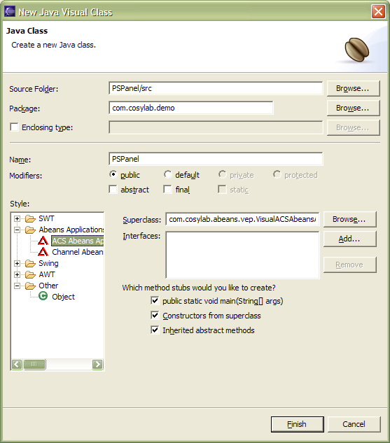
Figure 1: The wizard for creating a new visual application.
- Select the style: Abeans Applications , ACS Abeans Application .
- Type in the name (and package) of the application class - PSPanel.
- Check the method stub options and and press Finish .
With this steps the visual application class is created and Eclipse switches to Visual Java Class Editing mode.
3. Creating the GUI
In this section, we will make the GUI of our application.
3.1. Application layout
In this section we set up the layout in which GUI component will be placed inside the PSPanel.
-
First we want to choose a suitable layout for our application.
Click on the panel in the GUI editor view or on the this root node in the [Java Beans] tree view.
A list of available properties is displayed in the bottom tab.
Click on the layout property and choose the GridLayout from the combo box on the right.
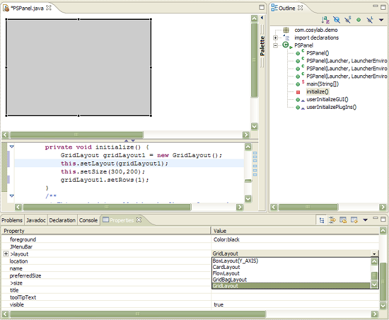
Figure 2: Selecting the layout manager for the PSPanel.
-
Next we modify the layout to display the contents in rows instead of columns (the default setting).
This is done by either expanding the layout option in the list of properties.
In the property table below click on the columns item and type in 1 instead of 0.
Similary in the rows column change the value from 1 to 0.

The layout can alternatively be custumized or by right clicking on the panel and selecting the menu option.
3.2. Adding GUI Components
Now we can start adding the Abeans components to the panel by choosing them from the [Pallete] on the right side of the GUI Editor view.
-
Hold the mouse pointer over the palette bar or click on it to expand it.
From the [Pallete] select the folder Abeans Components and the Single Abean Selector icon from it:
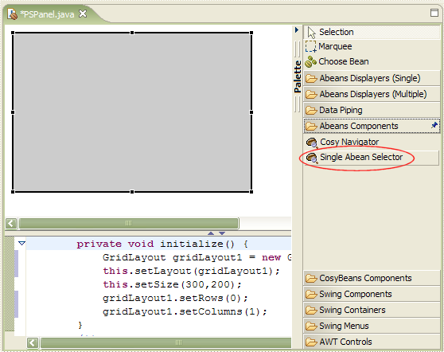
Figure 3: Click on the Single Abean Selector icon.
Then, click somewhere on the empty form and the selector will appear on it. From the [Pallete] select the tab Abeans Displayers (Single) and add Gauger, Slider and Ledder to the form. The application should now look like this: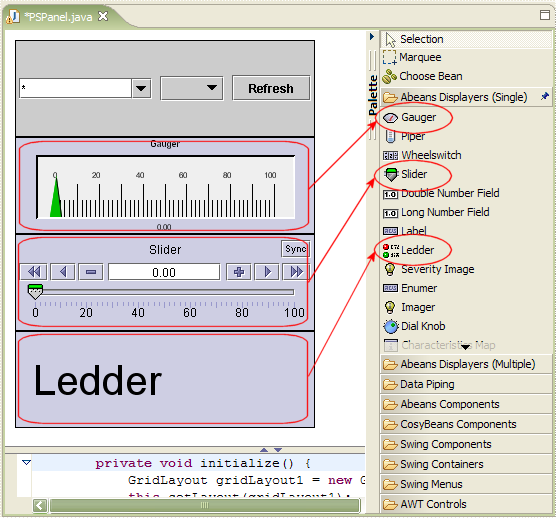
Figure 4: PSPanel layout.
Alternatively, components from the [Palette] can be added directly to the [Java Beans] tree view instead to the GUI editor view. This procedure is useful if there is now space in the GUI layout of the panel where to drop the new component. -
We also need some other swing components to control the application.
From the Swing Containers folder select the JPanel and add it to the form.
From the [Java Beans] tree select the jPanel1 node and set the GridBagLayout layout manager.
Then add three buttons to the added JPanel by selecting JButton from the Swing Components folder and clicking somewhere within the jPanel's space, repeating the procedure three times.
You may need to resize the form so that all the components are not squeezed together two much.
This is done by selecting the panel in the [Java Beans] tree and then mouse dragging the lower-right edge of the form.
In the [Java Beans] tree click on the first button jButton with the right mouse button.
In the popup dialog select .
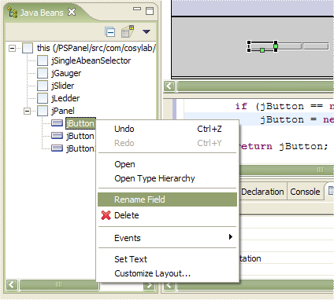
Figure 5: Renaming components.
Another dialog shows up. In the text field enter onButton and press OK . Again select the first button now named onButton and in the properties tab set the text to ON. Repeat the whole procedure with the second button (jButton1), renaming it to offButton and setting its text to OFF and the third button (jButton2) to resetButton with text RESET. The application should now finally look like this: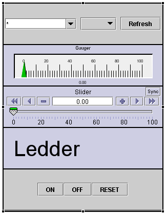
Figure 6: PSPanel layout.
4. The Power Supply Bean
In this section we lookup the invisible device bean representing a power supply and add it to our application.
-
In the [Palette] click on the Choose Bean icon.
A dialog shows up.
In the text field type in "PowerSupply".
Select PowerSupply from the matching types list and press OK .
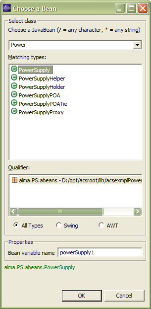
Figure 7: Finding power supply bean.
-
Click somewhere on the GUI canvas outside the applicaton panel.
The bean should appear in the [Java Beans] tree view as well as in the GUI Editor view.
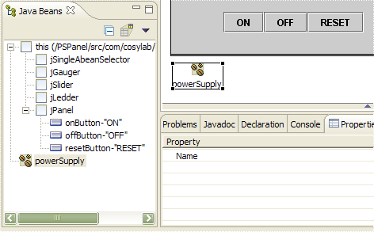
Figure 8: The complete PSPanel Java Beans tree with Power Supply Bean.
5. Adding application logic
In this section we add logic to the application by connecting beans nad handling events.
5.1. Connecting Power Supply Bean to GUI Components
First we want to connect the power supply bean to the abeans GUI components and dispalyers.
- First select the jSingleAbeanSelector from the [Java Beans] tree (or by clicking on it in the form). From the property sheet click the abean property and in the combo box select powerSupply .
-
At this point we cannot avoid typing in a few lines of code.
Select from the [Outline] tree view the method getJGauger() .
The Java code view below the GUI editor scrolls to display the method.
Expand the Java code view by clicking on the up arrow in the split pane delimiter between the GUI editor and Java code view.
Below the Gauger constructor call type in the following:
jGauger.setDoubleProperty(getPowerSupply().getReadback());
Listing 1: Setting the power supply readback to the gauger. - Repeat the upper procedure for doubleProperty of jSlider only select the getCurrent() method of powerSupply bean. Also apply same procedure for the patternProperty of jLedder and use the getStatus() method from powerSupply bean.
5.2. Handling events
In this section we will add control of the power supply bean through the buttons in the PSPanel. And inversely, we will add visual indications to internal state changes of the power supply by adding handlers to its link events.
-
First we want to be able to turn the power supply on by pressing onButton .
Click on onButton in the [Java Beans] tree with the right mouse button.
From the popup menu select and option.
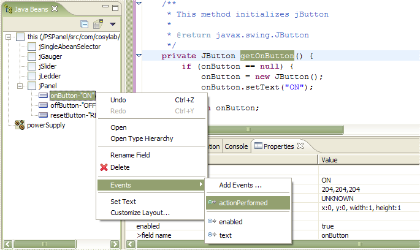
Figure 9: Adding functionality to the onButton.
The Java code view changes to the the newly created actionPerformed method below the onButton constructor call. Type in the following:try { powerSupply.on(); } catch (Exception ex) { ex.printStackTrace(); }Listing 2: The code to be executed when onButton (ON) is pressed. - Repeat the upper procedure for offButton and execute powerSupply.off(). The same for resetButton with powerSupply.reset() method invocation.
-
Finally we want to enable or disable the three buttons when the power supply bean successfully connects to the underlying modeling layer.
Select powerSupply from the [Java Beans] tree and select and options from the popup menu.
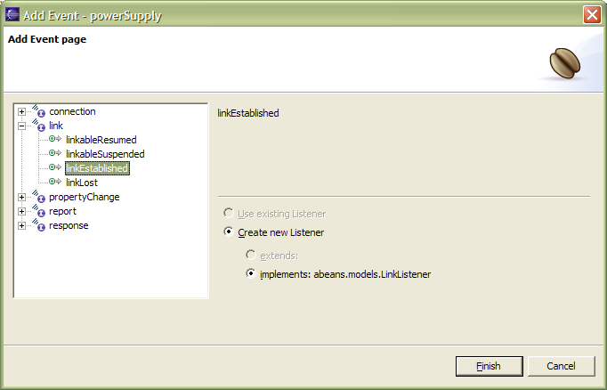
Figure 10: Adding functionality when the power supply link is established.
In the Java code view of the linkEstablished method enter:onButton.setEnabled(true); offButton.setEnabled(true); resetButton.setEnabled(true);
Listing 3: The code to be executed when powerSupply becomes linked to the modeling layer. -
Repeat the upper procedure for the linkLost event and disable all the PSPanel buttons in the handler method. Only this time, from the [Add Event] dialog, choose the option.
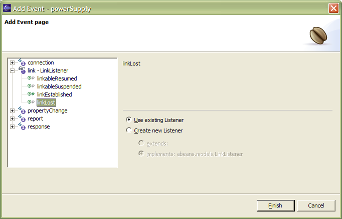
Figure 11: Adding functionality when the power supply link is lost.
6. Creating the application for a specific device
If you want a PSPanel that controls only one device, you do not need a SingleAbeanSelectorBean. To create such application just follow the steps outlined above, but remember to exclude the Selector Bean. Create all the connections and logic explained with one exception. Instead of setting the powerSupply as the abean of the selector (which is now missing) set the remoteName of the powerSupply to the name of the device you wish to control.
- Select powerSupply from the [Java Beans] tree.
-
In the property sheet click on the remoteName property and in the textField to the right enter the name of the device you wish to control.
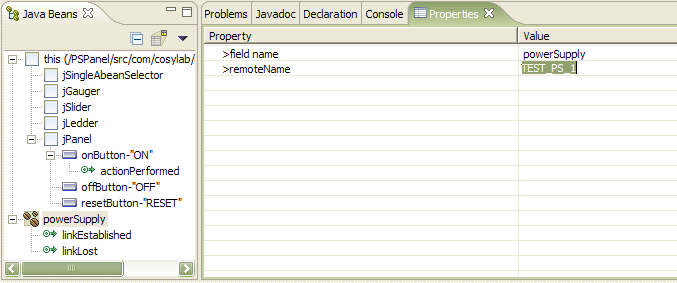
Figure 12: Setting remote name of a specific device you wish to control with the PSPanel.
- Press Enter to confirm your entry. The corresponding method call is generated in the Java code view of PSPanel.
-
The newly generated method call setRemoteName throws declared exceptions, which still need to be handled.
Click on the light bulb icon on the left side of the code view.
From the popup menu select Surround with try/catch and press Enter .
A try/catch block is generated around the method call.
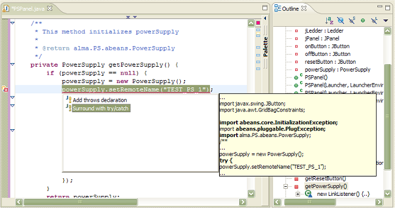
Figure 13: Handling exceptions.
7. Running the application from within the IDE
Abeans applications can be launched easily using com.cosylab.abeans.AbeansLaunchable. Just add the following code the the main method of PSPanel:
public static void main(String[] args) {
//this launches PSPanel application
AbeansLaunchable.launch(PSPanel.class, args);
}
|
| Listing 4: The code for launching PSPanel. |
|---|
The easiest way then to run the PSPanel application is from within the Eclipse IDE.
- Select the menu from the main menu bar and select the option.
-
A dialog shows up. In the tree view on the left select Java Application and press New .
A new Java Application running configuration is created for PSPanel.
In the [Arguments] tab enter the JVM and program arguments you normally use for running ACS based Abeans applications and press Apply .
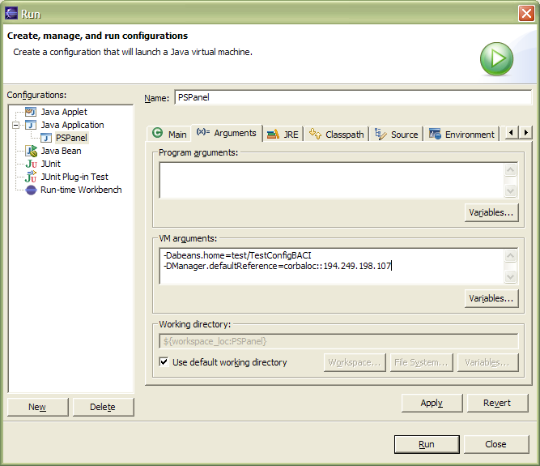
Figure 14: Enter JVM arguments for running the PSPanel.
-
Press Run to run the application for the first time.
Next time you want to run the application just press the Run icon in the menu bar or select PSPanel from its drop down menu.
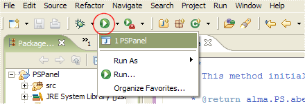
Figure 15: Running PSPanel from Eclipse menu bar.
| By default setting JVM arguments is not necessary since default Abeans configuration has been already put in your classpath by the installation procedure. |
8. Conclusion
With same grips we can visually build a lot of different but functional applications in very short time using the integration of Abeans libraries and the Eclipse IDE with the Visual Editor plug-in.
9. Appendix
9.1. Abeans Visual Eclipse Plugin Installation
This section describes the installation of the Abeans Visual Eclipse Plugin (Abeans-VEP) for building ACS Abeans java applications visually in Eclipse.
 |
The Abeans-VEP was tested to work with Eclipse v3.1.0 and Eclipse Visual Editor Plugin v1.1.0.1, on which this tutorial is based.
The plugin is |
- First you need to install the Eclipse Visual Editor Plugin, which is available for download at eclipse.org/vep website. The plugin version 1.1.0.1 references additional eclipse plugins: EMF build 2.1.0 and GEF Build 3.1 both available for download at the plugin site. Unzip all of the plugins into the eclipse installation directory to match the subfolder structure.
- Next, fetch the Abeans-VEP distribution from the acsabeans/lib module. Install it by unpacking into the eclipse installation plugins subfolder.
| When installing additional plugins into an existing eclipse installation, it may occour on some systems, that the new plugins are not recognized by Eclipse. In such cases delete the contents (including the hidden .settings subfolder) of the configuration subfolder of the Eclipse installation except the config.ini file. |
9.2. Configuring Eclipse Projects for Building and Running ACS Abeans Visual Applications
This section describes how to create and configure an Eclipse Java Project for visually building and running ACS Abeans applications.
- Create a new Java Project by Selecting .
- A new project wizard dialog appears. In the list select and click Next .
- In the next page enter the Project's name and click Next .
- In the Java Settings page select the tab and click Add Variable... .
- A new variable classpath entry dialog appears. From the list of variables select ACSROOT and click Extend... .
- In the browser dialog select all the ACSROOT jars and click OK .
- Repeat the procedure for the JACORB_HOME variable, then click Finish to finish the new project wizard.
- A new project is created in the Eclipse workspace which is already configured for building and running ACS Abeans visual applications.
Document History
| Revision | Date | Author | Section | Modification |
|---|---|---|---|---|
| 1.0 | 2005-03-02 | Jernej Kamenik | all | Created. |
| 1.1 | 2005-09-01 | Jernej Kamenik | 7. | Updated. |
| 1.2 | 2005-09-01 | Jernej Kamenik | 9. | Added notes on installation and config. |
References
| ID | Author | Reference | Revision | Date | Publisher |
|---|---|---|---|---|---|
| 1 | Heiko Sommer | ACS Eclipse Installation | 1.3 | 2005 | ALMASW |